@inproceedings{TEMP,
author = {},
title = {TEMP},
booktitle = {TEMP},
year = {2025},
}
TLDR
We propose a system which leverages dense language annotations of offline data to learn low-level manipulation skills that can be modulated or repurposed in semantically meaningful ways to adapt to new situations.
Overview
Recent advances have showcased the opportunity of leveraging the broad semantic understanding learned by vision-language models (VLMs) in robot learning; however, connecting VLMs effectively to robot control remains an open question since physical robot data is relatively sparse and narrow compared to internet-scale VLM training data. We propose STEER, a system for bridging this gap by learning flexible, low- level manipulation skills that can be modulated or repurposed to adapt to new situations. We show that training low-level learned policies on structured, dense re-annotation of existing robot datasets exposes an intuitive and flexible interface for humans or VLMs to guide them in unfamiliar scenarios or to perform new tasks using common-sense reasoning. We demonstrate the skills learned via STEER can be combined to synthesize novel behaviors to achieve held-out tasks without additional training.
Qualitative Comparisons using Human Instructions
Pouring
STEER (ours)OpenVLART-1RT-H language motionsImage GCBC
STEER (ours)OpenVLART-1RT-H language motionsImage GCBC
STEER (ours)OpenVLART-1RT-H language motionsImage GCBC
STEER (ours)OpenVLART-1RT-H language motionsImage GCBC
STEER (ours)OpenVLART-1RT-H language motionsImage GCBC
Grasping Potted Plant
STEER (ours)OpenVLART-1
STEER (ours)OpenVLART-1
STEER (ours)OpenVLART-1
STEER (ours)OpenVLART-1
STEER (ours)OpenVLART-1
Grasping Kettle
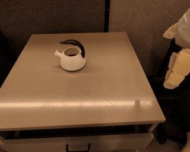
STEER (ours)OpenVLART-1
STEER (ours)
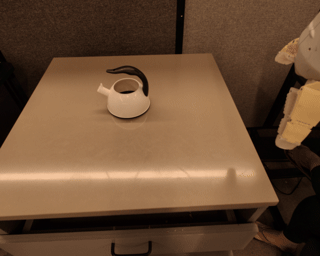
OpenVLART-1
STEER (ours)OpenVLA
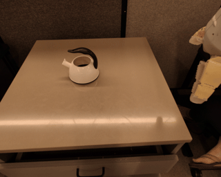
RT-1
STEER (ours)OpenVLART-1
STEER (ours)
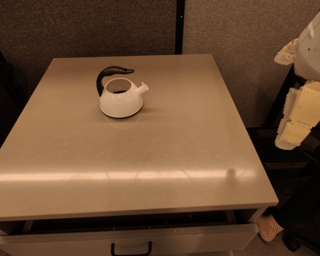
OpenVLART-1
Grasping in Clutter
STEER (ours)OpenVLART-1
STEER (ours)OpenVLART-1
STEER (ours)OpenVLART-1
STEER (ours)OpenVLART-1
STEER (ours)OpenVLART-1
VLM STEERing
We show that we can automate STEER with an off-the-shelf VLM (in this case we use Gemini 1.5 Pro). In our experiments, we use the same system prompt as provided below. In the results section, we show the VLM outputs which are automatically parsed for code that is subsequently executed on the real robot.
System Prompt
You are a helpful robot with one right arm. You are equipped with a large parallel jaw gripper end-effector.
You will be asked to perform different tasks that involve interacting with the objects in the workspace.
You are provided with an API to execute actions in the physical world to complete the task. These are the only actions you can perform.
The procedure to perform a task is as follows:
The user will provide a task instruction along with a description of the scene in front of you.
Think about how you will complete the task by reasoning through how the object needs to be manipulated subject to the constraints of the robot's capabilities. When planning, take into account how a human might accomplish the task.
Write down the steps you need to follow in detail to execute the full task. Each step should correspond to 1 API call and contain a description of how you expect the scene to look like after executing the step based on what the robot did. Specifically, describe how the state of the objects in the scene should be and change after executing each step. Pay close attention to the position and orientation of objects. DO NOT SKIP THIS STEP.
Write python code to execute the steps on the robot using the API provided below.
The lines of code you write will be executed and the user will provide you with feedback after the code execution.
class RobotAPI(object):
def reset(self):
'''
Robot will reset, meaning it will open its gripper and return its arm to a retracted position.
'''
def grasp_object(self, object_name: str, grasp_approach: str):
'''
Robot will attempt to grasp the object using the approach specified in grasp_approach.
Args:
object_name: The name of the object to grasp. Objects should be referred to by some defining feature (e.g. color, brand, texture, etc.) and object type (e.g. cup, can, bowl, bag, etc.).
grasp_approach: One of "top-down", "from the side" or "diagonally".
"top-down" means the robot will descend from above the object and grasp. The object will be held with a vertical gripper orientation, with the fingers pointing down (i.e. 6pm on a clock).
"from the side" means the robot will approach the object from the right side and grasp. The object will be held with the fingers oriented horizontally pointing to the left (i.e. 9pm on a clock).
"diagonally" means the robot will approach the object neither perfectly top-down or from the side, the fingers will be pointed diagonally.
'''
def reorient(self, desired_gripper_orientation: str):
'''
Robot will attempt to reorient the object by turning its end-effector to the desired_gripper_orientation while maintaining its grasp on the object.
If the robot's gripper is vertical and reorients 90 degrees to horizontal, the object will also be reoriented by 90 degrees clockwise.
If the robot's gripper is horizontal and reorients 90 degrees to vertical, the object will also be reoriented by 90 degrees counterclockwise.
Args:
desired_gripper_orientation: One of "vertical" or "horizontal".
"vertical" means having its fingers on the same plane, parallel to the left and right walls, pointing straight down (i.e. 6pm on a clock).
"horizontal" means having its fingers on the same plane, parallel to the ground, and pointing to the left (i.e. 9pm on a clock).
'''
def place_object(self, object_name: str, location: str = "here"):
'''
Robot will attempt to place the object at the specified location.
Args:
object_name: The name of the object to place.
location: One of "here", "left", "right", "front", "back", "center".
Default is "here" meaning the robot will set the object straight down where the arm currently is, releasing it from its grasp.
If one of [left/right/front/back], the robot will move the object to the specified edge (or center) and then release the object there.
'''
def lift_object(self, object_name: str):
'''
Robot will maintain its grasp on the object and lift it, maintaining the x-y position and orientation of the object.
'''
Results
Task: Pick and hold up flower pot without disturbing the plant
This is a picture of the scene. Please pick up the orange flower pot without disturbing the plant.
I see the orange flower pot and will pick it up carefully.
Here are the steps I will take:
Grasp object: I will grasp the orange flower pot from the side.
Expected state: I will be grasping the orange flower pot from the side, lifting it slightly off the table.
Lift object: I will lift the orange flower pot higher.
Expected state: I will be holding the orange flower pot in the air.
Here is the code:
robot_api.grasp_object(object_name="orange flower pot", grasp_approach="from the side")
robot_api.lift_object(object_name="orange flower pot")
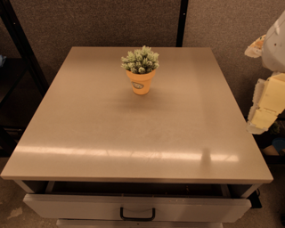
This is a picture of the scene. Please pick up the orange flower pot without disturbing the plant.
The pot is centered on the table. I will grab the pot from the side, lift it up, and hold.
Here are the steps to complete the task:
Grasp the pot: The robot will move its arm to the right side of the orange pot and grasp it from the side. The pot should now be held within the robot's gripper, with the gripper oriented horizontally (fingers pointing to the left).
robot_api.grasp_object(object_name='orange pot', grasp_approach='from the side')
Lift the pot: The robot will lift the pot straight up. The pot should now be in the air, still held in the robot's gripper.
robot_api.lift_object(object_name='orange pot')
That's it! I am now holding the orange pot.
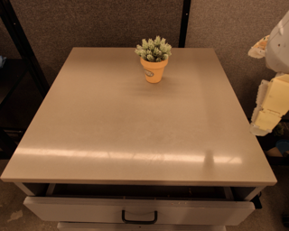
This is a picture of the scene. Please pick up the orange flower pot without disturbing the plant.
The flower pot appears to be made of clay and is centrally located on the table. I will approach the pot carefully from the top and grab it, making sure I do not touch the plant.
Steps:
grasp_object("orange flower pot", "top-down"): The robot's gripper should now be grasping the orange flower pot from the top. The plant should remain undisturbed.
lift_object("orange flower pot"): The robot should now be holding up the orange flower pot, which is still being grasped by the gripper.
This is a picture of the scene. Please pick up the orange flower pot without disturbing the plant.
Reasoning
The robot needs to grasp the flower pot from the side, as a top-down grasp would crush the plant. Once the pot is grasped, the robot can lift it up.
Steps:
Grasp the pot: The robot will reach for the orange flower pot and grasp it from the side. After this step, the robot will be holding the flower pot with its gripper oriented horizontally.
robot_api.grasp_object(object_name="orange flower pot", grasp_approach="from the side")
Lift the pot: The robot will lift the flower pot upwards while maintaining its grasp. After this step, the robot will be holding the pot in the air.
This is a picture of the scene. Please pick up the orange flower pot without disturbing the plant.
Reasoning:
To pick up the flower pot without disturbing the plant, I need to grasp the pot firmly from the sides. Since I only have one arm, I cannot stabilize the plant from the top.
Steps:
Grasp the flower pot: Approach the pot from the side and grasp it firmly.
Expected state: The robot arm will be holding the flower pot from the side. The plant should remain undisturbed inside the pot. The gripper orientation will be horizontal.
Lift the flower pot: Lift the pot vertically to hold it up.
Expected state: The robot arm will be raised, holding the flower pot with the plant still inside.
Python code:
robot_api.grasp_object(object_name="orange flower pot", grasp_approach="from the side")
robot_api.lift_object(object_name="orange flower pot")
This is a picture of the scene. Please pick up the orange flower pot without disturbing the plant.
The robot should grasp the orange pot from the sides and lift it up.
Here are the steps to complete the task:
Grasp object: The robot will grasp the orange flower pot from the side. The gripper will be oriented horizontally.
robot_api.grasp_object(object_name='orange flower pot', grasp_approach='from the side')
Lift object: The robot will then lift the pot upwards. The pot will be lifted with the gripper in a horizontal orientation.
This is a picture of the scene. Please pick up the orange flower pot without disturbing the plant.
The robot should grasp the pot from the sides and lift it up.
Here are the steps:
Grasp the orange flower pot: The robot will move its arm to the flower pot and grasp it from the sides. The gripper fingers will be oriented horizontally (9pm on a clock) and will be squeezing the sides of the pot.
Lift the pot: The robot will lift the pot straight up, keeping the pot level.
robot_api.grasp_object(object_name='orange flower pot', grasp_approach='from the side')
robot_api.lift_object(object_name='orange flower pot')
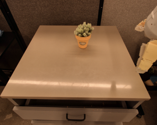
This is a picture of the scene. Please pick up the orange flower pot without disturbing the plant.
Reasoning
The robot should be able to grasp the orange flower pot from the sides and lift it up.
Steps:
Grasp Object: Grasp the orange flower pot from the side. The gripper's fingers should be oriented horizontally.
Expected state: The robot is now grasping the orange flower pot from the sides.
Lift Object: Lift the orange flower pot up.
Expected state: The robot is now holding the orange flower pot in the air.
Python Code:
robot_api.grasp_object(object_name="orange flower pot", grasp_approach="from the side")
robot_api.lift_object(object_name="orange flower pot")
Task: Hold the fruit up, while avoiding the other objects
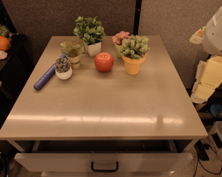
This is a picture of the scene. Hold the apple up, while avoiding the other objects.
The apple is in the center of the table, with a few plants surrounding it. I will grasp the apple from the top and lift it up.
Here are the steps to complete the task:
Grasp the apple: The robot will move its arm to the center of the table, open its gripper, lower the gripper until it's around the apple, and then close the gripper. The apple should now be in the robot's grasp.
Lift the apple: The robot will move its arm upwards, lifting the apple off the table. The apple should now be raised above the table, held by the robot.
robot_api.lift_object(object_name='red apple')
That's it! The apple should now be held up by the robot.
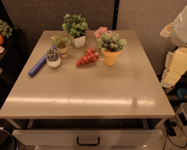
This is a picture of the scene. Hold the grapes up, while avoiding the other objects.
The grapes are in the center of the table, with a plant in a white pot to the left and a plant in an orange pot to the right.
Here are the steps to complete the task:
Grasp grapes: Reach towards the grapes from above and grasp them.
Expected state: The robot's gripper is grasping the grapes. All other objects remain in their initial positions.
Lift grapes: Lift the grapes straight up.
Expected state: The robot is holding the grapes in the air. All other objects remain in their initial positions.
This is a picture of the scene. Hold the orange up, while avoiding the other objects.
Reasoning:
To hold the orange up, I need to grasp it and then lift it. Since my gripper is large, I need to make sure to approach the orange carefully to avoid hitting the nearby plants. A top-down grasp would be best to ensure a stable grip.
Steps:
Grasp the orange: Reach for the orange from above and grasp it.
Expected state: The robot's gripper is grasping the orange. All other objects remain in their original positions.
Lift the orange: Lift the orange upwards.
Expected state: The robot is holding the orange in the air. All other objects remain in their original positions.
Let me know if you would like to proceed with the execution.
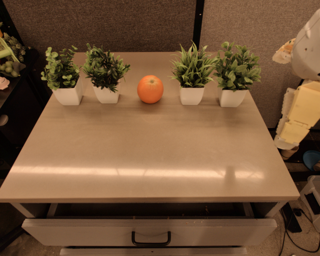
This is a picture of the scene. Hold the orange up, while avoiding the other objects.
Reasoning:
To hold the orange up, I need to grasp it and then lift it. Since I only have one arm, I need to make sure the grasp is secure before lifting. A top-down grasp is best for this. I also need to make sure I don’t knock over the plants on either side of the orange.
Steps:
Grasp the orange: Reach for the orange from above and grasp it.
Expected state: The robot arm is holding the orange with a vertical gripper orientation. The orange is no longer on the table.
Lift the orange: Lift the orange upwards.
Expected state: The robot arm is holding the orange in the air. The orange is no longer touching the table.
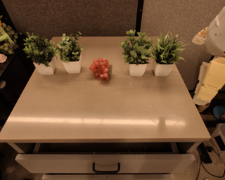
This is a picture of the scene. Hold the grapes up, while avoiding the other objects.
I see the bunch of grapes in the center of the table, between the three white pots to the left and the white pot to the right. I will grasp the grapes from the top and lift them up.
Here are the steps to complete this task:
Grasp the grapes: The grapes are in the center of the table. I will grasp them from the top.
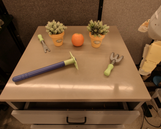
This is a picture of the scene. Hold the orange up, while avoiding the other objects.
The orange is in the center of the table, with two plants on either side of it and two gardening tools in front of it. To complete this task, I will grasp the orange from the top, lift it up, and hold it there.
Here are the steps I will take:
Grasp the orange: I will grasp the orange from the top. The orange will now be in the robot's gripper.
Lift the orange: I will lift the orange up. The orange will now be held above the table, with the gripper still oriented vertically.
robot_api.lift_object(object_name='orange')
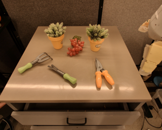
This is a picture of the scene. Hold the grapes up, while avoiding the other objects.
Reasoning:
To hold the grapes up, I need to grasp them and then lift my arm. Since I only have one arm, I need to make sure the grapes are the only object in my grasp. To avoid hitting the plants or the tools, I should approach the grapes from the side.
Steps:
Grasp the grapes: Reach for the grapes from the side and grasp them.
Expected state: The robot's gripper should be holding the grapes, with the fingers oriented horizontally. The grapes should be lifted slightly off the table. All other objects remain untouched.
Lift the grapes: Raise the arm holding the grapes.
Expected state: The robot arm is raised with the grapes held in a horizontal orientation by the gripper. All other objects remain untouched.
Code:
robot_api.grasp_object(object_name='grapes', grasp_approach='from the side')
robot_api.lift_object(object_name='grapes')
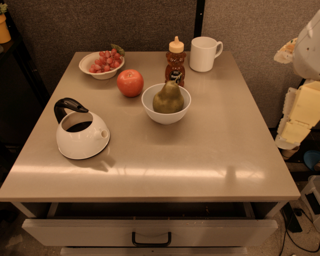
This is a picture of the scene. Hold the apple up, while avoiding the other objects.
Reasoning:
To hold the apple up, I need to grasp it and then lift it. I will use a top-down grasp to pick up the apple directly.
Steps:
Grasp the apple: Reach for the apple from above and grasp it.
Expected state: The robot's gripper is grasping the apple. All other objects remain in their original positions.
Lift the apple: Lift the apple straight up.
Expected state: The robot is holding the apple in the air. All other objects remain in their original positions.
This is a picture of the scene. Hold the apple up, while avoiding the other objects.
Reasoning:
The apple is in the center of the table, surrounded by other objects. To grasp it, the robot needs to approach from the top to avoid collisions. Once grasped, the apple needs to be lifted to be considered "held up".
Steps:
Grasp apple: The robot will move its arm to the apple and grasp it from the top.
Expected state: The robot is now grasping the apple with its gripper oriented vertically. All other objects remain in their original positions.
Lift apple: The robot will lift the apple while maintaining its grasp.
Expected state: The apple is now raised above the table, held by the robot. All other objects remain in their original positions.
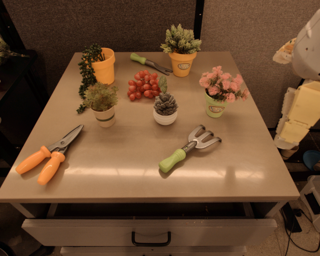
This is a picture of the scene. Hold the grapes up, while avoiding the other objects.
Reasoning:
To hold the grapes up, I need to grasp them and then lift them. Since the grapes are in the middle of the table, I need to make sure to grasp them from the top to avoid hitting other objects.
Steps:
Grasp the grapes: Reach for the grapes from the top and grasp them.
Expected state: The robot's gripper is grasping the grapes. All other objects remain in their original positions.
Lift the grapes: Lift the grapes vertically.
Expected state: The robot is holding the grapes in the air. All other objects remain in their original positions.
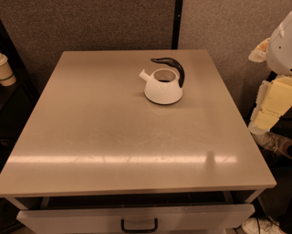
This is a picture of the scene. Please pick and hold up the black and white kettle.
The kettle appears to be upright with its handle oriented to the left.
Here are the steps to pick up the kettle:
Grasp the kettle: The robot will grasp the kettle from the top. After this step, the kettle will be held by the robot with the gripper oriented vertically.
robot_api.grasp_object(object_name='white kettle with black handle', grasp_approach='top-down')
Lift the kettle: The robot will lift the kettle upwards. After this step, the kettle will be held up in the air by the robot.
robot_api.lift_object(object_name='white kettle with black handle')
Let me know how I did!
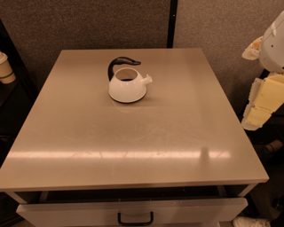
This is a picture of the scene. Please pick and hold up the black and white kettle.
Grasp Kettle: The robot should grasp the kettle from the top since the handle is upright.
State Change: The robot's gripper will be grasping the black and white kettle. The kettle will be lifted slightly off the table.
Lift Kettle: Lift the kettle to show that it is holding it.
State Change: The robot's arm will be raised with the kettle held in the gripper. The kettle will be clear of the table.
robot_api.grasp_object(object_name='black and white kettle', grasp_approach='top-down')
robot_api.lift_object(object_name='black and white kettle')
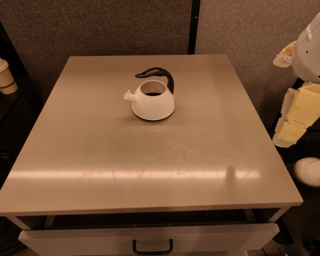
This is a picture of the scene. Please pick and hold up the black and white kettle.
The robot can complete this task. Here are the steps to pick up the kettle:
Grasp the kettle: The robot will grasp the kettle from the top. After this step, the kettle will be held in the robot's gripper.
robot_api.grasp_object(object_name="black and white kettle", grasp_approach="top-down")
Lift the kettle: The robot will lift the kettle upwards. After this step, the kettle will be held in the air.
robot_api.lift_object(object_name="black and white kettle")
Let me know when you would like me to proceed.
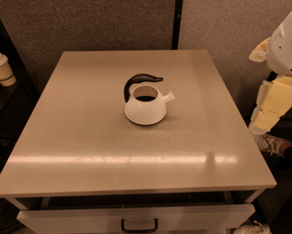
This is a picture of the scene. Please pick and hold up the black and white kettle.
The kettle is sitting on the table. My end-effector is also above the table, so I can reach down to grasp it from the top and lift it up to hold it.
Here are the steps to complete the task:
Grasp the kettle: Grasp the "black and white kettle" from the top. The gripper will be oriented vertically with the kettle grasped in its middle.
Lift the kettle: Lift the kettle straight up. The kettle will be lifted above the table and the gripper orientation will remain vertical.
robot_api.grasp_object(object_name="black and white kettle", grasp_approach="top-down")
robot_api.lift_object(object_name="black and white kettle")
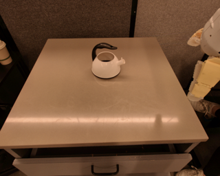
This is a picture of the scene. Please pick and hold up the black and white kettle.
The kettle is sitting upright on the table. I will grasp the kettle from the top and lift it up.
Here are the steps I will take:
Grasp the kettle: I will move my arm to be above the kettle and orient my gripper to be vertical. Then I will grasp the kettle from the top.
Object State: The kettle will be held in the robot's gripper.
Lift the kettle: I will lift the kettle straight up.
Object State: The kettle will be held in the robot's gripper above the table.
robot_api.grasp_object(object_name='black and white kettle', grasp_approach='top-down')
robot_api.lift_object(object_name='black and white kettle')
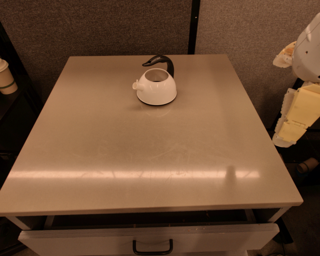
This is a picture of the scene. Please pick and hold up the black and white kettle.
The kettle's handle is sticking up, so it would be easiest to grasp the kettle from the side and then reorient to have the handle upright.
Steps:
grasp_object(object_name="black and white kettle", grasp_approach="from the side"): The robot will move its arm to the kettle and grasp the body of it from the side. The kettle's handle will be horizontal, and spout facing forward.
reorient(desired_gripper_orientation="vertical"): The robot will maintain its grasp on the kettle and rotate its gripper to be vertical. The kettle will now be held upright with the spout facing to the right and handle to the back.
lift_object(object_name="black and white kettle"): The robot will lift the kettle straight up, maintaining the kettle's orientation.
robot_api.grasp_object(object_name="black and white kettle", grasp_approach="from the side")
robot_api.reorient(desired_gripper_orientation="vertical")
robot_api.lift_object(object_name="black and white kettle")
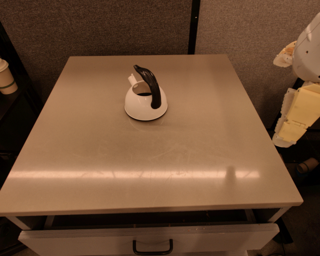
This is a picture of the scene. Please pick and hold up the black and white kettle.
The kettle is sitting upright on a table. I will grasp the kettle from the top, then I will lift it up.
Here are the steps:
Grasp the kettle: I will grasp the kettle from the top with a vertical gripper orientation. The kettle will now be in the robot's gripper.
Lift the kettle: I will lift the kettle straight up, maintaining its grasp and orientation. The kettle will now be elevated above the table and grasped by the robot.
robot_api.grasp_object(object_name="black and white kettle", grasp_approach="top-down")
robot_api.lift_object(object_name="black and white kettle")
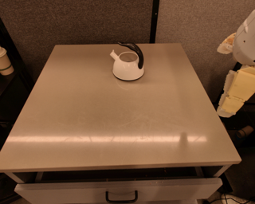
This is a picture of the scene. Please pick and hold up the black and white kettle.
Reasoning:
The robot needs to grasp the kettle from above and lift it up.
Steps:
Grasp the kettle: The robot will move its arm to be above the kettle and grasp it from the top.
Expected state: The robot's gripper will be grasping the kettle with a vertical orientation (fingers pointing down).
Lift the kettle: The robot will maintain its grasp on the kettle and lift it up.
Expected state: The robot will be holding the kettle in the air.
Code:
robot_api.grasp_object(object_name='black and white kettle', grasp_approach='top-down')
robot_api.lift_object(object_name='black and white kettle')
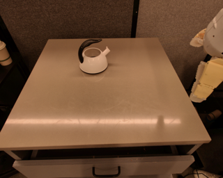
This is a picture of the scene. Please pick and hold up the black and white kettle.
The robot should be able to grasp the kettle from the top and lift it up.
Steps:
Grasp the kettle: The robot will move its arm to be positioned above the "black and white kettle" and then grasp the kettle with a top-down grasp. The kettle will now be in the robot's gripper.
Lift the kettle: The robot will lift the kettle straight up, maintaining its grasp on the kettle. The kettle will now be raised above the table.
Code:
robot_api.grasp_object(object_name="black and white kettle", grasp_approach="top-down")
robot_api.lift_object(object_name="black and white kettle")
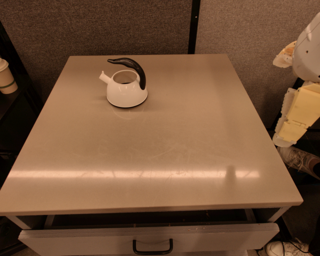
This is a picture of the scene. Please pick and hold up the black and white kettle.
Reasoning:
The robot needs to grasp the kettle from the top and lift it up. The handle orientation doesn't matter since the task is just to hold it up.
Steps:
Grasp the kettle:
Action: grasp_object("black and white kettle", "top-down")
Expected State: The robot will move its arm to the kettle, grasp it from the top, and the gripper fingers will be oriented vertically.
Lift the kettle:
Action: lift_object("black and white kettle")
Expected State: The robot will maintain its grasp on the kettle and lift it slightly above the table. The kettle will remain in the same orientation as it was grasped.
Code:
robot_api.grasp_object("black and white kettle", "top-down")
robot_api.lift_object("black and white kettle")
Task: Pour
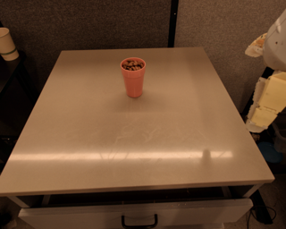
This is a picture of the scene. Please pour contents out of the pink cup and place it back upright on the table.
Sounds good, I can help with that! I will carefully grasp the pink cup, tilt it over so that the contents fall out, and then place the cup back on the table upright. Here are the steps I will take:
Grasp cup: I will grasp the pink cup from the side.
State change: The robot arm will move to the pink cup and grasp it from the side with its gripper oriented horizontally.
Lift cup: I will lift the pink cup up.
State change: The pink cup will be lifted up, off of the table.
Reorient cup: I will reorient the cup so that the opening is facing down.
State change: The robot arm will rotate its gripper so that it is oriented vertically. The pink cup will be rotated so that its opening is facing the table.
Pour contents: I will move the cup over the table and shake it until the contents fall out.
State change: The contents of the pink cup will be emptied onto the table.
Reorient cup: I will reorient the cup so the opening is facing up.
State change: The robot arm will rotate its gripper so that it is oriented horizontally. The pink cup will be rotated so that its opening is facing up.
Place cup: I will place the cup back on the table.
State change: The robot arm will move the pink cup back down to the table and release it. The pink cup will be upright on the table.
Code:
robot_api.grasp_object(object_name='pink cup', grasp_approach='from the side')
robot_api.lift_object(object_name='pink cup')
robot_api.reorient(desired_gripper_orientation='vertical')
# Since there is no shake function in the API, we can try to achieve the desired outcome by reorienting the gripper back and forth.
robot_api.reorient(desired_gripper_orientation='horizontal')
robot_api.reorient(desired_gripper_orientation='vertical')
robot_api.reorient(desired_gripper_orientation='horizontal')
robot_api.place_object(object_name='pink cup', location='here')
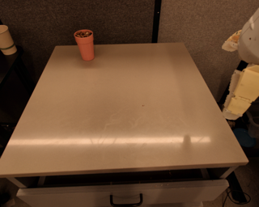
This is a picture of the scene. Please pour contents out of the pink cup and place it back upright on the table.
Reasoning:
To pour the contents of the pink cup, we need to grasp it, reorient it until the opening is facing down, and then turn it back upright and place it on the table.
Steps:
Grasp the pink cup: The robot will move its arm towards the pink cup and grasp it from the side. After this step, the pink cup should be held in the robot's gripper with a horizontal orientation.
robot_api.grasp_object(object_name="pink cup", grasp_approach="from the side")
Reorient the gripper to pour out the contents: The robot will rotate its gripper to a vertical orientation. This will result in the pink cup being upside down, allowing its contents to fall out.
Reorient the gripper back to horizontal: The robot will rotate its gripper back to a horizontal orientation. This will bring the pink cup back to an upright orientation.
Place the pink cup on the table: The robot will move its arm back to the table and place the pink cup back down. The pink cup should now be upright and empty on the table.
This is a picture of the scene. Please pour contents out of the pink cup and place it back upright on the table.
Plan:
Grasp the pink cup from the side.
Lift the cup up.
Tilt the cup over to pour out its contents.
Tilt the cup back upright.
Place the cup back on the table.
Python code:
robot_api.grasp_object(object_name='pink cup', grasp_approach='from the side') # Cup is grasped from the side, fingers oriented horizontally.
robot_api.lift_object(object_name='pink cup') # Cup is now held in the air.
robot_api.reorient(desired_gripper_orientation='vertical') # Cup is now tilted, contents poured out.
robot_api.reorient(desired_gripper_orientation='horizontal') # Cup is now upright again.
robot_api.place_object(object_name='pink cup', location='here') # Cup is placed back on the table.
Reasoning for Grasping Approach:
Pouring Clearance: Grasping from the side allows for a more natural and efficient pouring motion. When the gripper is oriented horizontally, rotating it to "vertical" naturally tips the cup forward, facilitating the pouring action.
Stability: Grasping from the side provides a more stable grip on the cup, especially when tilting it to pour out the contents. This reduces the risk of the cup slipping from the gripper's grasp.
While a "top-down" grasp might seem intuitive for picking up a cup, it would require more complex manipulations to achieve the desired pouring angle, potentially increasing the risk of spilling or dropping the cup.
This is a picture of the scene. Please pour contents out of the pink cup and place it back upright on the table.
I see the pink cup and understand the task. Here are the steps to accomplish it:
Grasp cup: Grasp the pink cup from the side.
The cup will be in the robot's gripper, held horizontally.
Lift and reorient cup: Lift the cup and reorient the gripper to vertical.
The cup will be held above the table, tilted so that the opening is facing down.
Pour contents: Move the cup over the table and rotate the gripper to horizontal.
The contents of the cup will be poured onto the table, and the cup will be upside down in the robot's grip.
Reorient cup upright: Rotate the gripper back to vertical.
The cup will be upright but still grasped.
Place cup: Place the cup back on the table.
The cup will be back in its original location, upright and empty.
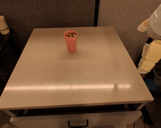
This is a picture of the scene. Please pour contents out of the pink cup and place it back upright on the table.
The robot should be able to pour the contents out of the pink cup. However, without knowing what the contents of the cup are, it is difficult to predict how they will behave when the cup is tilted. Assuming the contents are loose, like marbles or small toys, the robot should be able to pour them out.
Here are the steps to complete the task:
Grasp cup: Grasp the pink cup from the side. The cup will be held horizontally in the robot's gripper.
robot_api.grasp_object(object_name='pink cup', grasp_approach='from the side')
Lift cup: Lift the cup slightly to avoid hitting the table. The cup is still being held horizontally in the robot's gripper.
robot_api.lift_object(object_name='pink cup')
Tilt cup: Rotate the gripper to reorient to a vertical position. The cup will be tilted, with the opening facing downward and the contents spilling out onto the table.
Reset robot: Return the robot arm to its neutral position.
robot_api.reset()
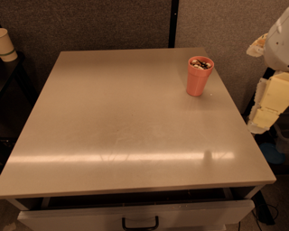
This is a picture of the scene. Please pour contents out of the pink cup and place it back upright on the table.
I can do that. I will need to grasp the cup, turn it upside down, and then place it back on the table. Here are the steps I will take:
Grasp the cup: I will grasp the pink cup from the side.
The cup will be in the robot's gripper.
Reorient the cup: I will reorient the gripper to be vertical.
The cup will now be upside down with its contents having fallen out onto the table.
Reorient the cup: I will reorient the gripper to be horizontal.
The cup will now be right-side up.
Place the cup: I will place the cup back on the table.
The cup will be back on the table, upright and empty.
robot_api.grasp_object(object_name="pink cup", grasp_approach="from the side")
robot_api.reorient(desired_gripper_orientation="vertical")
robot_api.reorient(desired_gripper_orientation="horizontal")
robot_api.place_object(object_name="pink cup", location="here")
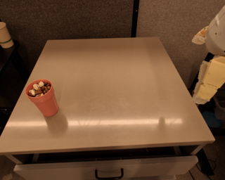
This is a picture of the scene. Please pour contents out of the pink cup and place it back upright on the table.
Here are the steps to complete the task:
Grasp the pink cup from the side: The robot should approach the pink cup and grasp it from the side, so the cup is held horizontally.
Expected state: The robot is now holding the pink cup horizontally with its contents still inside.
Reorient the gripper to vertical: This will rotate the cup to pour out the contents onto the table.
Expected state: The pink cup is now empty, and the contents are on the table. The robot is holding the cup upside down.
Reorient the gripper to horizontal: This will rotate the cup back to a horizontal orientation.
Expected state: The pink cup is now empty and held horizontally by the robot.
Place the cup back on the table: The robot will place the empty cup back on the table.
Expected state: The pink cup is now sitting upright and empty on the table.
Here is the python code to execute these steps:
robot_api.grasp_object(object_name='pink cup', grasp_approach='from the side')
robot_api.reorient(desired_gripper_orientation='vertical')
robot_api.reorient(desired_gripper_orientation='horizontal')
robot_api.place_object(object_name='pink cup', location='here')
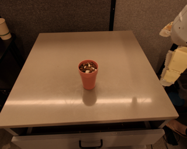
This is a picture of the scene. Please pour contents out of the pink cup and place it back upright on the table.
Okay, here's how I'll approach this:
Grasp the cup: I'll grasp the pink cup from the side to have a secure grip for pouring.
Expected state: The robot's gripper is securely grasping the pink cup from the side. The cup is lifted slightly off the table.
Reorient the cup: I'll reorient my gripper to a vertical orientation to prepare for pouring.
Expected state: The robot's gripper is now oriented vertically, holding the pink cup sideways above the table.
Pour out the contents: I'll maintain the grip and rotate the cup to pour out its contents onto the table.
Expected state: The pink cup is now empty, with its contents poured out onto the table. The robot is still holding the cup sideways.
Reorient the cup (again): I'll reorient my gripper back to a horizontal orientation.
Expected state: The robot is now holding the empty pink cup upright.
Place the cup: I'll carefully place the empty pink cup back on the table.
Expected state: The empty pink cup is now resting upright on the table.
Here's the Python code using the provided API:
robot_api.grasp_object(object_name="pink cup", grasp_approach="from the side")
robot_api.reorient(desired_gripper_orientation="vertical")
# Assuming there's no specific API call for pouring,
# the following is a hypothetical way to achieve it:
robot_api.reorient(desired_gripper_orientation="horizontal")
robot_api.reorient(desired_gripper_orientation="vertical")
robot_api.place_object(object_name="pink cup", location="here")
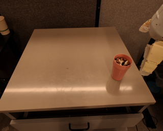
This is a picture of the scene. Please pour contents out of the pink cup and place it back upright on the table.
Here are the steps to pour the contents out of the pink cup and place it back upright on the table:
Grasp the cup: Grasp the pink cup from the side.
Expected state: The robot is holding the pink cup upright in its gripper.
Lift the cup: Lift the cup to a few inches above the table.
Expected state: The robot is holding the pink cup in the air above its original position.
Tilt the cup: Reorient the gripper to horizontal. This will tilt the cup so that the opening is facing downwards.
Expected state: The pink cup is tilted upside down, with the contents pouring out onto the table. The robot is holding the cup in this orientation.
Return the cup to an upright orientation: Reorient the gripper to vertical. The cup should now be upright again.
Expected state: The pink cup is now empty and back in an upright orientation, held by the robot above the table.
Lower the cup: Lower the cup back to the table.
Expected state: The empty pink cup is resting upright on the table.
Release the cup: Release the grip on the cup.
Expected state: The empty pink cup remains on the table, and the robot's gripper is empty.